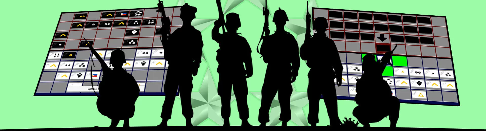

Welcome to GGgameguides.com
What is Games of Generals?
The Game of the Generals, also called GG or GOG as it is most fondly called, or simply The Generals, is an educational war game invented in the Philippines by Sofronio H. Pasola Jr. in 1970. Its Filipino name is "Salpakan." It can be played within twenty to thirty minutes. It is designed for two players, each controlling an army, and a neutral arbiter (sometimes called a referee or an adjutant) to decide the results of "challenges" between opposing playing pieces, that like playing cards, have their identities hidden from the opponent.
The game simulates armies at war trying to overpower, misinform, outflank, outmaneuver and destroy each other. It optimizes the use of logic, memory, and spatial skills. It simulates the "fog of war" because the identities of the opposing pieces are hidden from each player and can only be guessed at by their location, movements, or from the results of challenges. The game allows only one side's plan to succeed, although a player may change plans during the course of the game. In addition, there are two different ways of winning the game (see below). Certain strategies and tactics, however, allow both sides the chance of securing a better idea of the other's plan as the game progresses. Players can also speak or gesture to their opponents during matches, hoping to create a false impression about the identity of their pieces or their overall strategy.
DYK?: This game was invented by Sofronio H. Pasola, Jr. with the inspiration of his son Ronnie Pasola.
The Pasolas first tried the Game of the Generals on a chessboard. Even then, the pieces had no particular arrangement. There were no spies in the experimental game; but after Ronnie Pasola remembered the James Bond movies and Mata Hari, he added the Spies. Making the pieces hidden was the idea of the Pasolas after remembering card games.
The Game of the Generals' public introduction was on February 28, 1973. After the game was made, it angered many Filipino chess players thinking that Pasola was trying to denigrate or supplant chess.